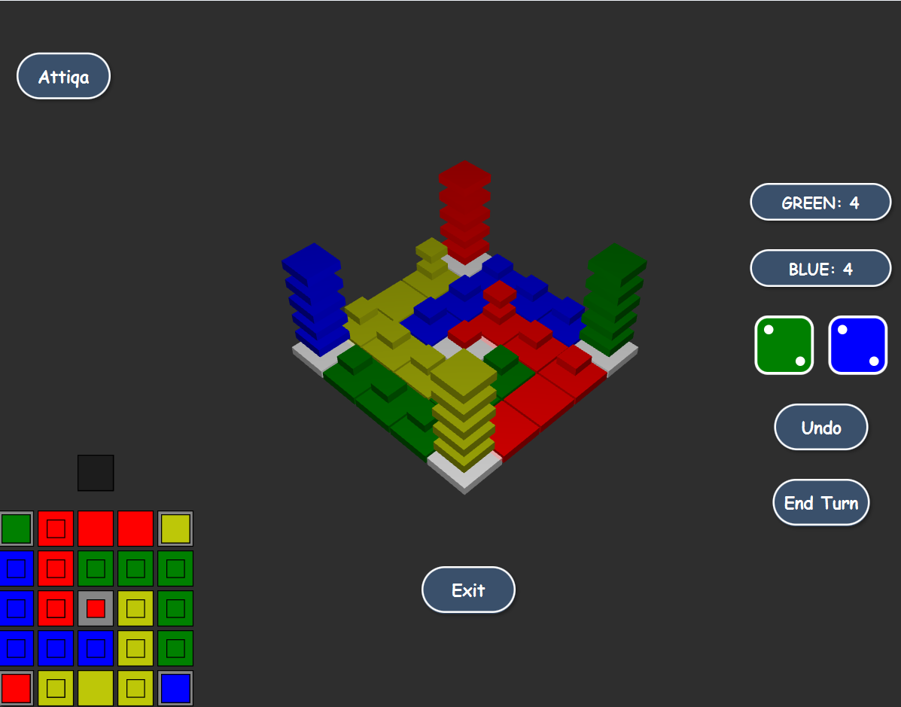
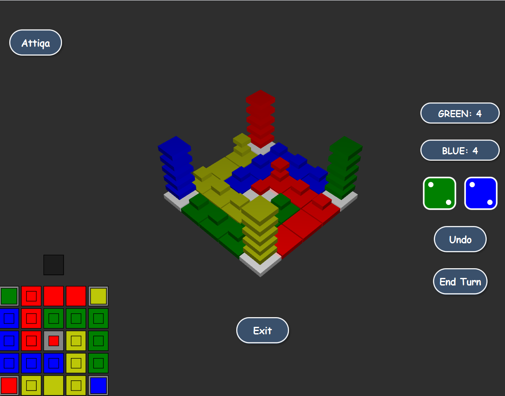
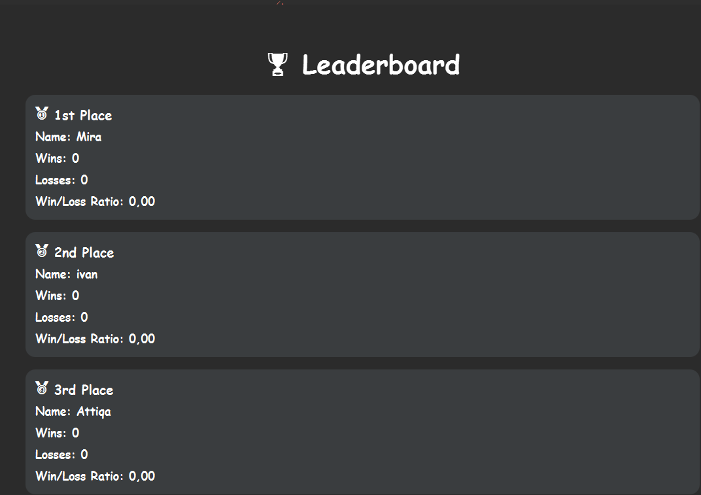
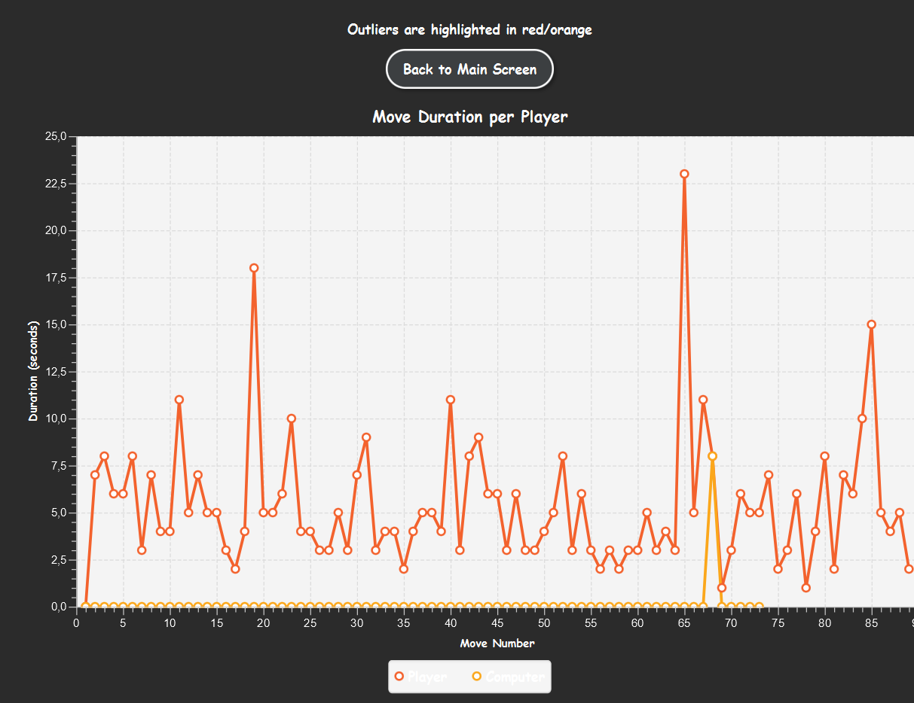
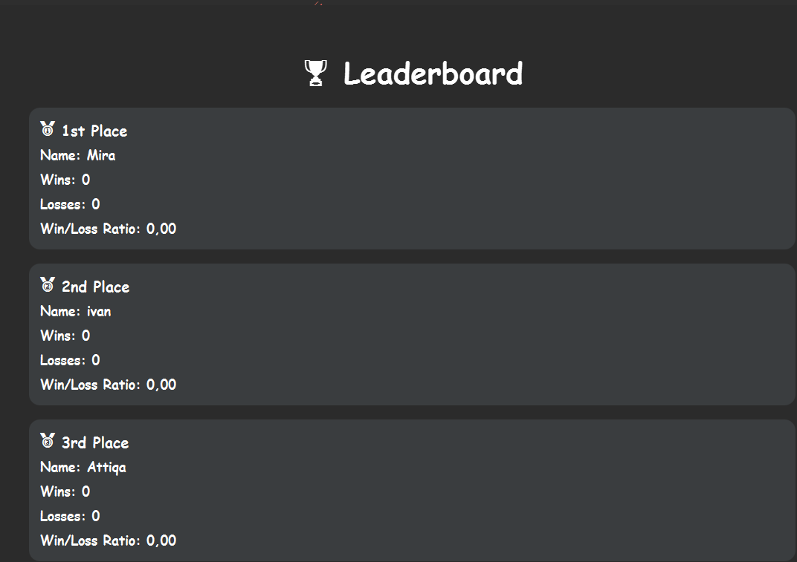
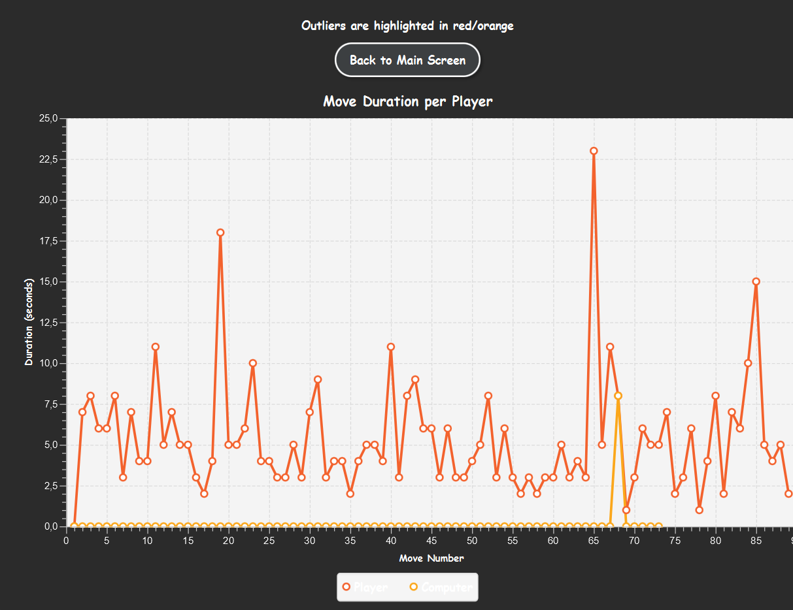

Sprint 3 Milestones
PROG: Application final Version - Daniel, Mira, Hildo, Attiqa
Blockade Game Development
1. Initial Setup: Game Structure and Design
Overview: In this sprint, the basic structure of the game was set up. The core gameplay mechanics, including player movements, basic board setup, and initial layout were implemented. The focus was on defining the game’s main logic and ensuring that all foundational elements were in place.
2. UI and Game Logic: Game Interface and Rules Implementation
Overview: In this sprint, the user interface (UI) was developed using JavaFX. Screens were designed to allow players to interact with the game, including a visual representation of the board, move options, and dice rolls. Additionally, key game logic, such as move validation and scoring, was implemented to ensure smooth gameplay.
3. Blockades and Move System: Strategic Gameplay Features
Overview: The blockade system was introduced, allowing players to strategically block their opponents’ movements. The move system was refined to include movement points and legal moves, ensuring players could interact with the board in meaningful ways. Random bot movements were also integrated to simulate an AI opponent.
4.Leaderboard and Game Statistics: Tracking Performance
Overview: The leaderboard and game statistics features were developed to track player progress and display key information such as scores, play time, and move history. This provides players with insights into their performance and adds competitive elements to the game.


 

 



PROG: Project Website - Mira
1. Basic Setup: Structuring the Website
Overview: In this initial sprint, the basic structure of the website was set up. This included determining the layout and how the different pages will be organized. The focus was on defining the overall structure of the website and creating a foundation for future work.
2. Index Page: Landing Page Development
Overview: The index page was developed to serve as the landing page of the website. It contains key information about the project, including an introduction to the game, its objectives, and an invitation to explore further details. It aims to engage visitors and get them excited about the project.
3. Team Page: Introducing the Team
Overview: The team page was created to introduce the members of the project team. Each member’s role, picture, and a brief description of their background and responsibilities were added to give the audience insight into who is behind the project.
4. Sprints Overview: Detailing Milestones for Each Subject
Overview: The sprints overview page was developed to showcase the milestones achieved during each sprint of the project. For each subject area (such as Software Engineering, Data & AI, Infrastructure, and Programming), a brief description was added to explain the tasks completed and the progress made. This page serves to highlight the key achievements of the team across the different subjects.
Infra # 6: Script to export DB to CSV - Hildo, Attiqa
1: Shell Script Development
Created a shell script to automate the export of game session statistics from the PostgreSQL database on the Linux server.
- The script uses the
psqlcommand-line tool to connect to the database securely. - It executes a SQL query to select relevant data and outputs the results to a CSV file.
- Script includes checks to ensure the output directory and permissions are correctly handled.
2: Testing on VM and Server
The export process was tested thoroughly both on a local virtual machine and the actual Linux server:
- Confirmed script functionality on the local VM before deployment.
- Tested the same script on the server with real data to verify correct operation.
- CSV output was reviewed and validated for correct formatting and data accuracy.
3: Design Document and Reporting
The design document provided for this task was reviewed, elaborated, and updated:
- Documented the full export process, including command structure and setup steps.
- Added test results with example outputs and error handling notes.
- Exported and submitted the updated design document as a PDF.
4: Optional Features
These features were considered optionally and we have done this too:
- Scheduling automatic exports using
cronandcrontab. - Converting exported CSV files to JSON format for use in the web interface.
4: Summary of Completed Tasks
- Shell script created for CSV export
- Tested both locally and on the server
- Design document updated and submitted as PDF
Infra # 7: Deploy website on Server - Attiqa, Mira
1: Deployed Blockade Website on Team Server
The Blockade website was deployed to the team server successfully. The deployment followed all non-functional requirements set in the design document from Sprint 2:
- Webpages placed in the proper directory structure (
/var/www/html,/var/www/html/html,/var/www/html/css,/var/www/html/js, etc.). - All assets (images, CSS, JS) are properly linked and functional.
- Permissions and ownership are correctly set: files
rw-r--r--, foldersrwxr-xr-x, and ownership is set toroot:apache.
2: Organized Folder Structure for Website Assets
The website’s file structure is organized to align with best practices:
index.htmllocated in the/var/www/htmldirectory as the entry point.- Supporting HTML pages placed in the
/var/www/html/htmlfolder. - CSS files in the
/var/www/html/cssfolder. - JavaScript files stored in the
/var/www/html/jsfolder. - Images stored in the
/var/www/html/imgfolder.
3: Applied Non-Functional Requirements
All non-functional requirements were implemented:
- All file names are lowercase, ASCII-only, and free of spaces.
- All files are UTF-8 encoded to ensure compatibility.
- Permissions and ownership of files and folders set correctly for secure access.
- Folder structure adhered to, with distinct subfolders for each type of asset.
4: Website Testing and Validation
After deployment, the website was tested to ensure everything was functional:
- Verified that the website is accessible via the server’s IP .
- Ensured that all links, images, and media files load correctly.
- Confirmed that the CSS and JS files are applied properly across the website.
Data # 5: Rule based game play intelligence - Daniel
1. Game Strategy:
The AI was programmed to follow a strategic approach during the game, including:
- Prioritizing the selection of medium pieces for blockades.
- Focusing on capturing the center of the board.
- Blocking the opponent’s moves when possible.
- Resorting to random moves when no viable strategy exists.
2.Rule Set Implementation:
A comprehensive set of rules was implemented to guide the AI’s behavior. Key rules include:
- Selecting medium pieces to create blockades.
- Moving pieces to occupy strategic areas on the board.
- Making random legal moves when no strategic options are available.
3. AI Behavior Testing:
The AI’s decision-making was thoroughly tested to ensure:
- Strategic and valid move selection based on predefined rules.
- Formation of blockades when advantageous.
- Random moves are made only when no other options exist.